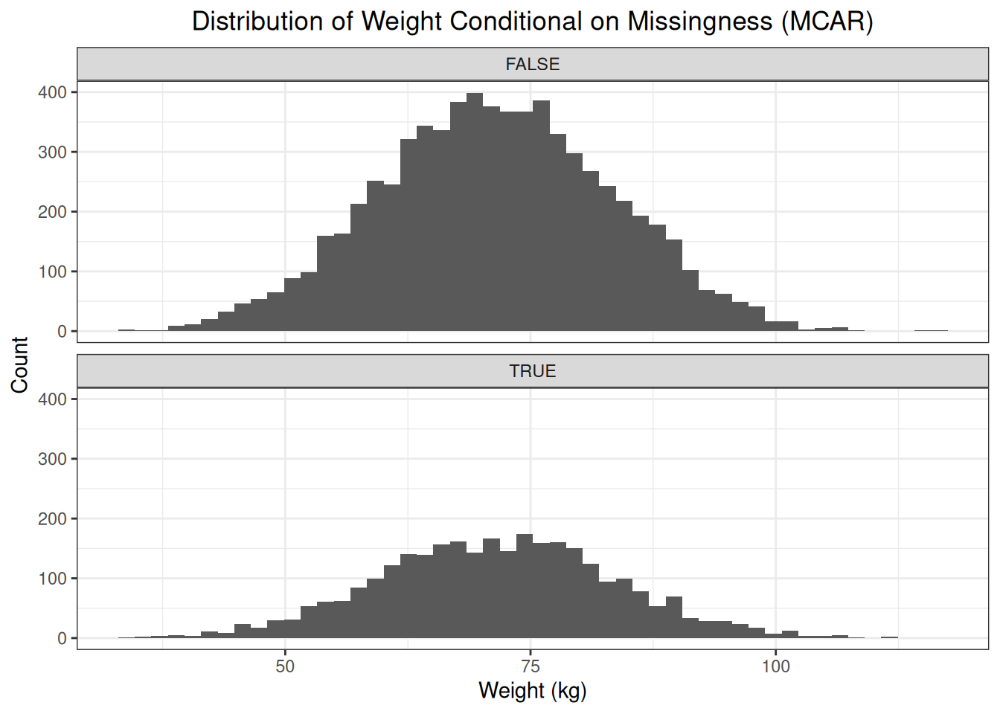
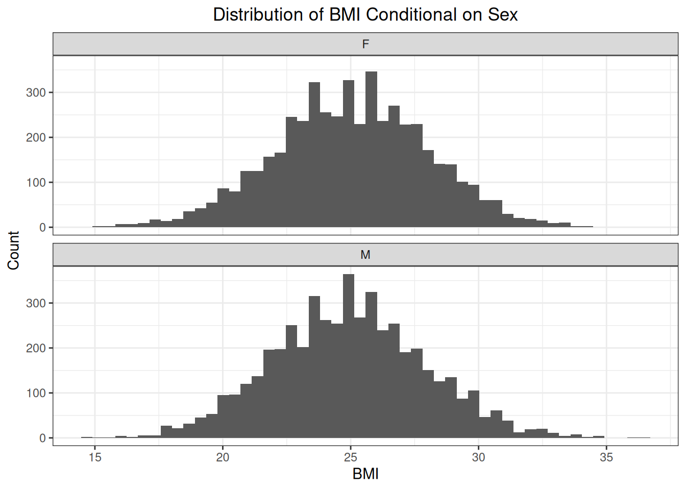
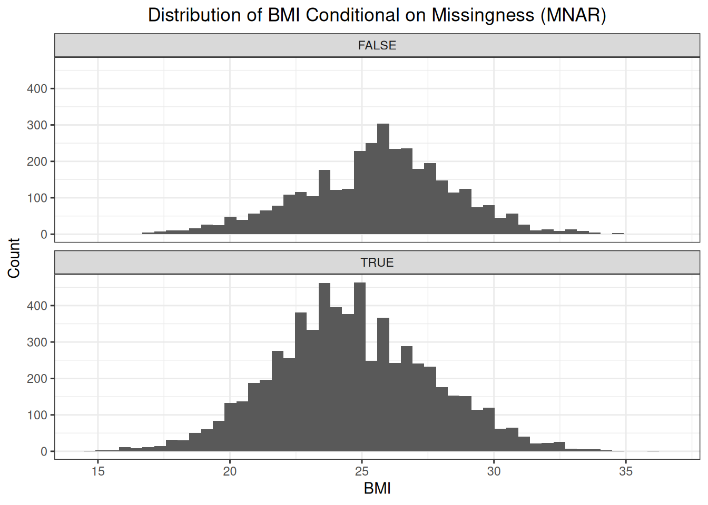
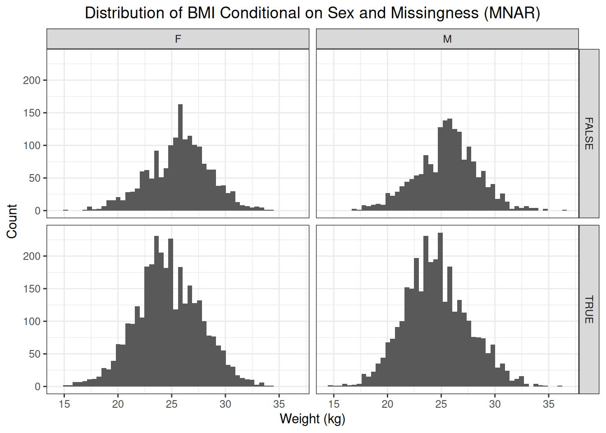

4 Missingness
4.1 Introduction
When fitting models to a particular dataset, missingness is of particular concern. Missing data can lead to biased coefficient estimates. Therefore, a good understanding of the different missingness patterns, their implications on model fitting, and how to deal with them is essential. There are three missingness patterns (missingness mechanisms):
- missingness completely at random (MCAR)
- missingness at random (MAR)
- missingness not at random (MNAR).
In the following sections, we will use a simulated dataset containing data on patients and their weight and BMI to illustrate these different mechanisms.
4.2 Missingess Patterns
4.2.1 Simulation Setup
Our simulation setup involves simulating the weight of patients visiting their general physician (GP) for a checkup. For each patient, the sex (male, female) is always recorded. The dataset is balanced in terms of sex, and we assume a normally distributed weight (kg) with a mean weight \(\mu_{f} = 65\) for women and \(\mu_{m} = 78\) for men. The standard deviation \(\sigma = 10\) is the same for both sexes:
\[ W_{f} \sim \mathcal{N}(65, 100) \]
and
\[ W_{m} \sim \mathcal{N}(78, 100). \]
We also simulate the BMI for these patients. We assume the BMI is normally distributed as follows:
\[ BMI \sim \mathcal{N}(25, 9). \]
# Simulate patient data. The dataset contains 10000 observations, and is
# balanced in terms of sex.
set.seed(123)
n <- 10000
# Define the parameters that define the distribution of weight and BMI
sd_bmi <- 3
mu_bmi <- 25
sd_weight <- 10
mu_weight_f <- 65
mu_weight_m <- 78
weights <- tibble::tibble(
idx = 1:n,
sex = rep(x = c("F", "M"), each = n / 2),
weight = c(
rnorm(n / 2, mu_weight_f, sd_weight),
rnorm(n / 2, mu_weight_m, sd_weight)
),
bmi = round(rnorm(n, mu_bmi, sd_bmi), 1)
)We can see that the conditional distributions of weight given sex have different means. Female patients show a mean weight of 64.99 kg (standard deviation (SD): 9.95) (male patients: 77.96 (SD: 10.03))

But the conditional distributions of BMI are the same.

4.2.2 Missingness Completely at Random
Missingness completely at random indicates that the observations with missing values are a random subset of all observations. There are no factors that affect the probability of missingness, nor is the probability of missingess affected by the outcome itself (weight or BMI). The distribution of observed and missing values is the same.
# Simulate MCAR: assume that 30% of observations have a missing outcome
set.seed(123)
idxs <- sample(x = n, size = n * 0.3)
weights["mcar"] <- weights$idx %in% idxsBecause the observations with missing values are a random subset of all observations, we should see no difference between the distributions of missing and observed values.

4.2.3 Missingness at Random
With missingness at random, we believe there are certain factors that affect the probability of missingness, and that these same factors also have an effect on the outcome. In our example, we see that sex affects the weight. We now assume that sex also affects the probability of missingness.
# Determine the conditional probabilities of missingness
p_missing_f <- 0.45
p_missing_m <- 0.25
idxs <- c(
sample(
x = weights[weights$sex == "F", "idx", drop = T],
size = (n / 2) * p_missing_f
),
sample(
x = weights[weights$sex == "M", "idx", drop = T],
size = (n / 2) * p_missing_m
)
)
weights["mar"] <- weights$idx %in% idxsInspection of the distributions of observed and missing values shows us that the distribution of missing values is shifted to the left compared to the distribution of observed values.

Because the probability of missingness is higher for women then for men, the fraction of patients with a missing weight that are female is higher than the fraction of patients with a missing weight that are men. This affects the distribution of the missing weights, i.e., shifting the distribution to the left. Assume that sex is the only factor that affects the probability of missingness, then, conditional on sex, the distribution of observed values and missing values is the same.

We can see that, conditional on sex, the distribution of observed and missing weights is the same. This illustrates the concept of missingness at random. Sex is the factor that influences both the probability of missingness and the outcome itself. Conditioning on this factors removes the difference in distributions of observed and missing weights.
In practice, it is impossible to conclude missingness at random by comparing the distribution of observed and missing values as the missing values are, of course, missing. This example just demonstrates the concept of missingness at random.
4.2.4 Missingness Not at Random
With missingness not at random, the probability of missingness is not affected by a factor that is recorded, but is affected by factors that are not recorded or even by the outcome itself. For this missingness pattern, we will not focus on the weight of the patient but on the patient’s BMI. The distribution of BMI is the same for women and for men:

However, we could argue the following: if a patient visits the GP, then the GP will more likely weigh the patient if he/she seems overweight or obese. We could make the same argument for underweight patients, but for the sake of illustration, we will assume the likelihood of being weighted is higher for overweight and obese patients. Based on BMI, we can classify patients as:
- underweight: \(BMI < 18.5\)
- normal: \(18.5 \leq BMI \leq 24.9\)
- overweight: \(25 \leq BMI \leq 29.9\)
- obese: \(30 \leq BMI\).
We assume the following conditional probabilities of missingness:
# Define conditional probabilities of missingness
p_missing_uw_nw <- 0.75 # underweight and normal weight
p_missing_ow_ob <- 0.55 # overweight and obese# Classify patients based on their BMI
weights <- weights %>%
dplyr::mutate(
bmi_class = dplyr::case_when(
bmi < 18.5 ~ "uw",
dplyr::between(bmi, 18.5, 24.9) ~ "nw",
dplyr::between(bmi, 25.0, 29.9) ~ "ow",
bmi >= 30.0 ~ "ob"
)
)fd_bmi_classes_df <- weights %>%
dplyr::group_by(bmi_class) %>%
dplyr::summarize(n = n())
fd_bmi_classes <- fd_bmi_classes_df$n
names(fd_bmi_classes) <- fd_bmi_classes_df$bmi_classset.seed(456)
idxs <- c(
sample(
x = weights[weights$bmi_class %in% c("uw", "nw"), "idx", drop = T],
size = round((fd_bmi_classes["uw"] + fd_bmi_classes["nw"]) * p_missing_uw_nw)
),
sample(
x = weights[weights$bmi_class %in% c("ow", "ob"), "idx", drop = T],
size = round((fd_bmi_classes["ow"] + fd_bmi_classes["ob"]) * p_missing_ow_ob)
)
)
weights["mnar"] <- weights$idx %in% idxsFirst, let’s have a look at the distribution of BMI conditional on missingness.

The distribution of the missing BMI values is shifted to the left compared to the distribution of the observed BMI values. This makes sense as the probability of the weight being recorded, and thus the BMI being calculated, is bigger as a patient tends to be overweight or obese.
We know from our simulation that sex does not influence the probability of missigness, nor is there any other factor that influences the probability of missingness, only the outcome itself. Therefore, conditioning on sex, will not eliminate the difference in distribution between observed and missing values.

4.3 Handling Missingness
In the following sections, we will look at different methods to handle missingness. First, we specify what it is that we are trying to estimate. Second, we determine the estimator that is used to estimate our estimand. Then, we will use simulation to demonstrate the properties of this estimator and how different techniques to handle missing data have an impact on the properties of this estimator.
Our estimand is the population mean weight. We know what the distribution of the weight is in male and female patients. We also know that the patient population is balanced (50% male patients, 50% female patients). Given the distributions, we can calculate the population mean weight using the law of iterated expectations:
\[ \mathbb{E}(Y) = \mathbb{E}[\mathbb{E}(Y | X)] \]
with \(Y\) the weight in kg and \(X\) the sex (male, female). This gives:
\[ \begin{align} \mathbb{E}(Y) &= \mathbb{E}[\mathbb{E}(Y | X)] \\ &= \sum_{x \in X} \mathbb{E}(Y | X) \cdot \mathbb{P}(X = x) \\ &= 65 \cdot 0.50 + 78 \cdot 0.50 \\ &= 71.5 \end{align} \]
We can also calculate the variance of the weight in the patient population. We know that the variance of the weight in the male and female patient population is the same, i.e., \(\sigma^2 = 100\). The weight between male and female patients is independent. So, the variance of \(Y\) can be calculated as:
\[ \begin{align} Var(Y) &= \mathbb{P}(X = female) \cdot Var(Y_f) + \mathbb{P}(X = male) + \mathbb{P}(X = female) (1 - \mathbb{P}(X = male)) + (\mu_f - \mu_m)^2 \\ &= 100 + 0.25 \cdot (65 - 78)^2 \\ &= 142.25 \end{align} \]
So, we have \(Var(Y) = \sigma^2 = 142.25\) and \(\sigma = 11.93\) kg.
4.4 No Missing Data
We are trying to estimate the population mean weight \(\mu = 71.5\) kg. To do this, we use the following estimator:
\[ \overline{X} = \frac{1}{n} \cdot \sum_{i = 1}^{n} X_i \]
The properties we will focus on are bias and precision. An estimator is unbiased if its expectation equals the true value of the population parameter it is trying to estimate (the estimand):
\[ bias(\hat{\theta}) = \mathbb{E}(\hat{\theta}) - \theta \]
The precision of an estimator \(\hat{\theta}\) can be quantified by the variance or standard error of the estimator. For our estimator \(\overline{X}\), the standard error can be calculated as follows:
\[ SE(\overline{X}) = \frac{\sigma}{\sqrt{n}} \]
We can use simulations to check whether our estimator is unbiased and to assess its variability. We draw a random sample with \(n = 1000\) patients. There is stratified sampling, so the sample always contains 500 female and 500 male patients. The estimator is used to produce an estimate of the population mean.
# Simulate patient data. The dataset contains 10000 observations, and is
# balanced in terms of sex.
set.seed(123)
n <- 1000
N <- 10000
# Define the parameters that define the distribution of weight and BMI
sd_bmi <- 3
mu_bmi <- 25
sd_weight <- 10
mu_weight_f <- 65
mu_weight_m <- 78
estimated_means <- rep(NA, N)
for (i in 1L:N) {
weights <- tibble::tibble(
idx = 1:n,
sex = rep(x = c("F", "M"), each = n / 2),
weight = c(
rnorm(n / 2, mu_weight_f, sd_weight),
rnorm(n / 2, mu_weight_m, sd_weight)
),
bmi = round(rnorm(n, mu_bmi, sd_bmi), 1)
)
estimated_means[i] <- mean(weights$weight)
}The mean of the estimated means equals 71.5, which equals the actual population mean weight of \(\mu = 71.5\). Furthermore, we see that the standard error of \(\overline{X}\) is \(SE(\overline{X}) = 0.3178\).

4.5 Complete Case Analysis
Complete case analysis is a technique where only those observations without missing data are used to produce estimates of the estimand. We define a binary variable \(O_i\), with \(O_i = 1\) if the outcome is observed for patient \(i\) and \(O_i = 0\) otherwise. Our estimator is now:
\[ \overline{Y} = \frac{1}{\sum_{i = 1}^{n} O_i} \cdot \sum_{i = 1}^{n} O_i \cdot Y_i \]
4.5.1 MCAR
Under MCAR, the observations with missing values are a random subset of the sample, and therefore the sample is still representative of the population. This implies that the estimator is unbiased. However, due to dropping incomplete observations from the sample, the sample will be less efficient (more imprecise).
# Simulate patient data. The dataset contains 10000 observations, and is
# balanced in terms of sex.
set.seed(123)
n <- 1000
N <- 10000
# Define the parameters that define the distribution of weight and BMI
sd_bmi <- 3
mu_bmi <- 25
sd_weight <- 10
mu_weight_f <- 65
mu_weight_m <- 78
estimated_means <- rep(NA, N)
for (i in 1L:N) {
weights <- tibble::tibble(
idx = 1:n,
sex = rep(x = c("F", "M"), each = n / 2),
weight = c(
rnorm(n / 2, mu_weight_f, sd_weight),
rnorm(n / 2, mu_weight_m, sd_weight)
),
bmi = round(rnorm(n, mu_bmi, sd_bmi), 1)
)
idxs <- sample(x = n, size = n * 0.3)
weights["mcar"] <- weights$idx %in% idxs
estimated_means[i] <- (1 / sum(!weights$mcar)) * sum(weights[!weights$mcar,, drop = F]$weight)
}We see that the mean of the estimates 71.5
equals the population mean \mu = 71.5. The standard error of the estimator
is quite larger than the one under the previous section:
0.4.